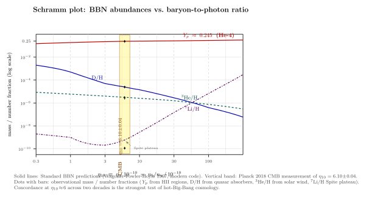

为什么宇宙里 25% 是氦?
到上一节为止, 我们的宇宙学故事走的是引力 + 几何那条线: Friedmann 方程, 哈勃膨胀, CMB. 但这一节起我们换轨, 看一件以前未必引起注意的事实: 在最早的宇宙里, 引力只负责设定膨胀的"时钟", 真正在做事的是核物理. 把今天的 CMB 温度 $T_0=2.725\,\mathrm{K}$ 沿 $T\propto 1/a$ 倒推, 当 $a$ 缩到今天的 $4\times 10^{-10}$ 时, $T\sim 1\,\mathrm{MeV}$ — 这是核结合能的 typical scale. 此时宇宙年龄约 1 秒, 整个可见区域都热到能让 $e^+e^-$、中微子、夸克-胶子的相变产物全在沸腾. 然后宇宙急速膨胀冷却, 在大约 3 分钟内把所有自由中子冻进了 $^4$He 原子核里. 这一节我们要把这个 3 分钟的故事算清楚, 落到一个实验可比的数: $Y_p\approx 0.245$.
这件事的物理几乎全在两步: (i) 中子-质子比的弱冻结, (ii) 氘瓶颈 (deuterium bottleneck) 打开后所有中子流进 $^4$He. 我们一段段拆.
一、热平衡里的中子-质子比
先看 $T\gg 1\,\mathrm{MeV}$ 的早期. 弱相互作用过程
$$ n + \nu_e \;\rightleftharpoons\; p + e^-, \qquad n + e^+ \;\rightleftharpoons\; p + \bar\nu_e, \qquad n \;\rightleftharpoons\; p + e^- + \bar\nu_e $$
把中子和质子频繁互转. 因为反应足够快, 它们处在化学平衡, 比例由 Boltzmann 因子给
$$ \frac{n_n}{n_p} \;=\; \exp\!\Big(-\frac{(m_n-m_p)c^2}{k_B T}\Big) \;=\; \exp\!\Big(-\frac{\Delta m c^2}{k_B T}\Big), \tag{1} $$
其中 $\Delta m c^2 = (m_n-m_p)c^2 = 1.293\,\mathrm{MeV}$ 是中子比质子重的部分. 在 $T\gg 1\,\mathrm{MeV}$, 比值接近 1 (中子和质子几乎一样多); 温度降下来后中子开始变得"昂贵", 比值开始下降. 关键是它什么时候冻结.
冻结是这种"扩张胜过反应"的现象, 一个 GR + 粒子物理的标志性事件. 弱反应率每秒每个中子大约
$$ \Gamma_{\rm wk}(T) \;\sim\; G_F^2\,(k_B T)^5 / \hbar^7, \qquad G_F = 1.166\times 10^{-5}\,\mathrm{GeV^{-2}}. $$
而宇宙的辐射主导期 Friedmann 给膨胀率
$$ H(T) \;\approx\; \sqrt{\frac{8\pi G}{3}\,\rho_{\rm rad}} \;=\; \sqrt{\frac{8\pi^3 G}{45\hbar^3 c^5}\,g_*(T)}\,(k_B T)^2, $$
其中 $g_*(T)$ 是当时所有相对论自由度的有效数 (光子 + $e^\pm$ + 三种中微子在 $T\sim 1\,\mathrm{MeV}$ 给 $g_*\approx 10.75$). 注意一个重要标度: $\Gamma_{\rm wk}\propto T^5$, $H\propto T^2$, 所以 $\Gamma/H \propto T^3$ — 温度一掉, 反应率掉得比膨胀率快得多, 反应迅速失效.
令 $\Gamma_{\rm wk}=H$ 解出 $T_{\rm freeze}$, 数值约为 $0.7$ 到 $0.8\,\mathrm{MeV}$ (具体依 $g_*$ 与精确反应率拼凑). 此时弱相互作用"卡死", 中子-质子比锁定在
$$ \left(\frac{n_n}{n_p}\right)_{\rm freeze} \;=\; \exp\!\Big(-\frac{1.293}{0.8}\Big) \;\approx\; e^{-1.6} \;\approx\; 0.20 \;\approx\; \frac{1}{5}. $$
这个 1/5 通常文献写 1/6, 因为 (a) freeze-out 不是瞬时的, 真实的反应率公式给的有效冻结温度更接近 0.7 MeV, (b) 中微子在 $T\sim 0.8\,\mathrm{MeV}$ 解耦但 $e^+e^-$ 灭绝把 $\gamma$ 加热, 这些细节让 $n/p$ 在 $1/6$ 到 $1/7$ 间. 我们就用 $n/p\approx 1/6$.
二、自由中子寿命与氘瓶颈
$T_{\rm freeze}$ 之后到 BBN 真正开始之间还有几分钟. 这段时间里中子并不闲: 自由中子有 $\beta$ 衰变, 寿命 $\tau_n\approx 879\,\mathrm{s}$ (~14.6 分钟, 这是粒子物理实验测得的). 在这几分钟里 $n/p$ 比继续下降,
$$ \left.\frac{n_n}{n_p}\right|_t \;=\; \left.\frac{n_n}{n_p}\right|_{\rm freeze}\!\!\cdot\,\exp(-t/\tau_n). $$
从 $t\sim 1\,\mathrm{s}$ 冻结到 $t\sim 180\,\mathrm{s}$ 核合成开始, $\exp(-180/879)\approx 0.81$, 把比值从 $1/6\approx 0.167$ 降到 $\approx 0.135$. 这是 30% 折让.
但为什么 BBN 要等到 $t\sim 3\,\mathrm{min}$? 答案是氘瓶颈. 反应链是
$$ p + n \;\to\; D + \gamma, \quad D + p \to {}^3\mathrm{He}+\gamma, \quad D + D \to {}^4\mathrm{He}+\cdots, \quad \ldots $$
第一步生成 $D$ (氘核, $D=\,^2\mathrm{H}$). 但氘的结合能只有 $B_D=2.22\,\mathrm{MeV}$, 比典型核子结合能小得多 — 这是因为 $D$ 是个松散结构, 中子和质子之间的吸引正好够把它绑起来. 在 $T\sim 0.5\,\mathrm{MeV}$ 时, $T \ll B_D$ 看上去 $D$ 应该稳定, 但宇宙里光子比重子多 $\sim 10^9$ 倍, 即使每个光子的能量 $k_B T$ 远低于 $B_D$, Boltzmann 尾巴上仍有 $\sim 10^9 \exp(-B_D/k_B T)$ 个光子能把 $D$ 拆掉. 所以净生成率为零, 直到 $\exp(-B_D/k_B T)\lesssim 1/n_\gamma$, 即
$$ k_B T_{\rm BBN} \;\approx\; \frac{B_D}{|\ln\eta|+\ln(\,\text{numerical factors}\,)} \;\approx\; \frac{2.22}{30} \;\approx\; 0.07\,\mathrm{MeV} \;\approx\; 8\times 10^8\,\mathrm{K}. $$
这对应 $t\sim 200\,\mathrm{s}$ ($\sim 3\,\mathrm{min}$). 一旦 $D$ 能稳定积累, 后续反应链 $D \to\,^3$He$\,\to\,^4$He 在几十秒内把几乎所有可用的中子全部喂进 $^4$He — 这是一个雪崩式跳跃. 之所以止步于 $^4$He 而非更重的核, 是因为没有稳定的 $A=5$ 与 $A=8$ 同位素 (gap), 反应链在 $^4$He 处堵死, 只有少量泄漏到 $^7$Li.
三、把数字拼出来: $Y_p\approx 0.25$
现在做 BBN 这一节真正的拼装. 假设 BBN 开始时 $n/p=1/7$ (Free-decay 修正后). 因为每个 $^4$He 用 2 中子 + 2 质子, 而几乎所有 $n$ 都进了 $^4$He, 我们有
$$ Y_p \;\equiv\; \frac{4\,n_{^4{\rm He}}}{n_b} \;=\; \frac{4\,(n_n/2)}{n_n+n_p} \;=\; \frac{2(n_n/n_p)}{1+(n_n/n_p)}. \tag{2} $$
代 $n/p=1/7$:
$$ Y_p \;=\; \frac{2/7}{1+1/7} \;=\; \frac{2/7}{8/7} \;=\; \frac{2}{8} \;=\; 0.250. $$
这就是"宇宙里 25% 是氦"的来源. 注意它几乎不依赖重子-光子比 $\eta$ — 因为 $Y_p$ 由 $n/p$ 决定, 而 $n/p$ 只依赖弱反应率与 Hubble 率的比值; 改变 $\eta$ 只会让其它 (微量) 同位素变化. $Y_p$ 平台高度的弱 $\eta$ 依赖来自氘瓶颈温度与中子衰变窗口的耦合, 但变化率仅 $\sim 10\%$ 量级.
这个不依赖是 $Y_p$ 作为宇宙学探针的妙处: 它对你不知道的 $\eta$ 不敏感, 但对你能否预言它的全部物理 — Hubble 率, 弱相互作用, $g_*$ — 极敏感. 比如, 如果存在第四代轻中微子, $g_*$ 会上升, $H$ 会变快, $T_{\rm freeze}$ 会推早, $n/p$ 会更接近 1, $Y_p$ 会上升. 现代 BBN 的精度足以把额外中微子家族的 effective 数目限到 $N_{\rm eff}\lt 3.4$ 左右 — 这是来自宇宙学的粒子物理约束.

四、其它三种轻元素与 $\eta$ 的指纹
$Y_p$ 平 — 但 $D$, $^3$He, $^7$Li 不平. 它们的丰度比对 $\eta$ 极敏感, 因为它们是 BBN 的"中间产物" 或"边缘漏出". 这就是上图 (Schramm 图) 的逻辑.
(a) 氘 D: $D$ 是 BBN 启动的钥匙也是其最容易 leak 的产物. $\eta$ 大 → 重子多 → 反应快 → $D$ 更彻底地被烧成 $^4$He → 残余 D/H 更小. 数值上 D/H $\propto \eta^{-1.6}$. 现代观测 (高红移 quasar 吸收线, Cooke 等) 测到 D/H = $(2.527\pm 0.030)\times 10^{-5}$ — 由此独立反推 $\eta_{10}=6.0\pm 0.1$, 与 Planck CMB 给的 $\eta_{10}=6.10\pm 0.04$ 在 1$\sigma$ 内一致.
(b) 氦-3 $^3$He: 与 D 类似但变化平缓, 因为 $^3$He 既被生成又被消耗. 太阳风测出的初始 $^3$He/H $\sim 1\times 10^{-5}$ 和 BBN 预言一致.
(c) 锂-7 $^7$Li: 这是个谷形曲线. 在低 $\eta$, $^7$Li 由 $^4$He + $^3$H$\to ^7$Li 生成; 在高 $\eta$, $^7$Be ($p$ 富) 主导, 后者最终衰变成 $^7$Li. 两条曲线交叉造谷. 在 $\eta_{10}\approx 6$ 处, 标准 BBN 预言 $^7$Li/H $\sim 4.7\times 10^{-10}$. 但低金属丰度的"Spite 平台"恒星观测给的是 $^7$Li/H $\approx 1.6\times 10^{-10}$ — 整整低 3 倍. 这就是著名的 "Lithium problem": BBN 在三种元素上都对, 唯独 Li 系统性偏离. 候选解释包括恒星表面对流把 Li 烧没了 (天文物理), 或者 BBN 时代有未知的物理 (新粒子, 衰变粒子, 等等). 这是当代宇宙学少数尚未关闭的精确测量 puzzle 之一.
(d) $\eta$ 与 $\Omega_b$: 把 $\eta_{10}=6.1\times 10^{-10}$ 换算成今日重子密度参数, 得 $\Omega_b h^2 \approx 0.0224$ — 也就是宇宙总能量的约 5% 是重子物质. 剩下的 27% 暗物质 + 68% 暗能量, 我们前几节已经看过. BBN + CMB 在重子份额上的独立交叉验证是 $\Lambda$CDM 模型最坚实的支柱之一: 一边来自 1 秒处的核反应率, 一边来自 $4\times 10^5$ 年后的声学振荡, 两者各自把 $\Omega_b$ 钉到几个百分点的精度而完全相容.
五、αβγ 论文与 Hayashi 的修正
这条故事线在 1948 年由 George Gamow 第一次写出. 他注意到当时宇宙学还没有任何"早期热"的图像, 但如果今天的元素丰度是热爆炸的化石, 我们就能从核物理反推早期温度. 他和他的研究生 Ralph Alpher 在 Phys. Rev. 提交《化学元素的起源》— 但 Gamow 在作者名单里加了 Hans Bethe (虽然 Bethe 没参与), 三个名字 Alpher-Bethe-Gamow 排成 $\alpha\beta\gamma$ — 这就是著名的 1948 年 "$\alpha\beta\gamma$ 论文". 它假设元素全部从中子 + 中微子-反中微子从早期一气合出来, 相当大胆但定性方向对.
这条路在 1950 年遭到 Chushiro Hayashi (林忠四郎) 的关键修正. Hayashi 指出 Gamow 错算了 $n/p$ 冻结: 必须考虑弱相互作用率比膨胀率慢的精确点, 而不是把它当作 $T\sim B$ 处的"热平衡"问题. Hayashi 把答案修到 $n/p\sim 1/5$, 与今天值非常接近. 这是 BBN 历史上从粗略尺度估算 → 第一性原理 freeze-out 计算的转折点.
1957 年 Burbidge-Burbidge-Fowler-Hoyle (B$^2$FH) 写了元素核合成的 anti-thesis: 他们论证所有重元素 (碳以上) 都在恒星里合成, 不在大爆炸里. 这是对的. 大爆炸做轻元素 (H, D, $^3$He, $^4$He, $^7$Li); 恒星做重元素 ($^{12}$C 以上). 两件事 partition 干净. 1967 年 Wagoner-Fowler-Hoyle 写下完整的 BBN 反应网络 — 从 12 种核 + 88 个反应的代码计算到现代 BBN code 的祖宗. 这是物理学里第一次完全用数值反应网络去预言宇宙观测的工作之一.
Hoyle 是个有趣的人物 — 他终生不接受大爆炸, "Big Bang" 这个词其实是他在 1949 年 BBC 广播节目里嘲讽地造出来取代他自己偏爱的 "稳态宇宙" (steady-state cosmology) 的; 但讽刺的是, 他自己的 BBN 计算成了大爆炸宇宙学最坚硬的预言之一. 科学有时这样运作: 一个人激烈反对的理论, 被他自己的精确计算钉成了对的.
小结
BBN 是大爆炸宇宙学最早、也是最干净的一次定量胜利. 物理只有两步: 第一, 当 $T\sim 0.8\,\mathrm{MeV}$ 时弱反应率 $\Gamma_{\rm wk}\propto T^5$ 与膨胀率 $H\propto T^2$ 相等, 中子-质子比通过公式 (1) 冻结到 $n/p\approx 1/6$; 中子衰变与中微子加热把它磨到 BBN 时刻的 $1/7$. 第二, 当 $T$ 降到 $\sim 0.07\,\mathrm{MeV}$, 氘瓶颈 (光子背景拆 $D$ 的能力) 终于被打破, 反应链雪崩式地把全部中子塞进 $^4$He, 公式 (2) 给出 $Y_p\approx 0.25$. 这个数与观测 $Y_p^{\rm obs}=0.245\pm 0.003$ 完美一致. 同时另外三个轻元素 D, $^3$He, $^7$Li 的丰度对 $\eta=n_b/n_\gamma$ 灵敏, 用它们反推得到 $\eta_{10}\approx 6$ — 与 Planck CMB 完全独立测得的 $\eta_{10}=6.10\pm 0.04$ 一致, 这就是 Schramm 图 (本节图 1) 上四条曲线在 $\eta_{10}\approx 6$ 处的共点验证. 唯一未对上的 Lithium problem 留在悬案. Gamow 1948 (αβγ), Hayashi 1950 (n/p 冻结修正), Wagoner-Fowler-Hoyle 1967 (完整反应网络) 是这条故事线的三个里程碑. 下一节我们离开 1 秒的世界, 跳到广义相对论最先出场也最先被验证的 1 个尺度: 水星近日点的 43 角秒.
▲